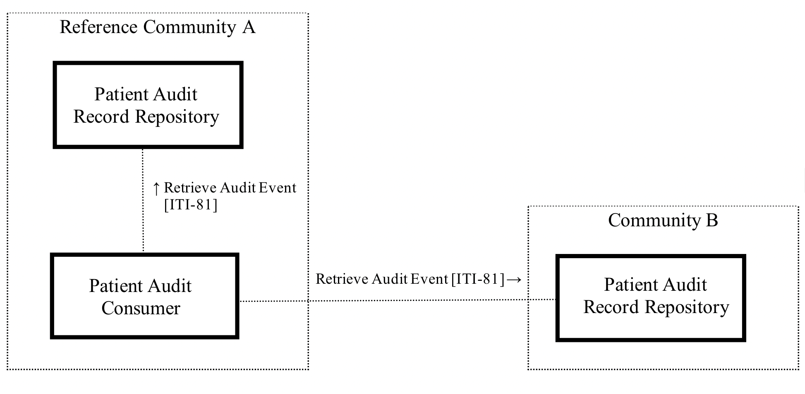

CH ATC (R4)
3.3.0 - draft

CH ATC (R4)
3.3.0 - draft

This page is part of the CH ATC (R4) (v3.3.0: Draft Draft) based on FHIR (HL7® FHIR® Standard) R4. This is the current published version. For a full list of available versions, see the Directory of published versions
This profile defines the audit trail consumption requirements a community has to provide for a patient’s audit trail.
The profile CH:ATC defines and precises the actors and Retrieve Audit Event [ITI-81] of the IHE ITI Supplement Add RESTful Query to ATNA and defines the content of the Audit Messages. The different types of the Audit Messages are based on the requirements for Document and Access Policy management as well as the entry of healthcare professionals into a group in order to achieve the Swiss regulation needs on the audit trail access by patients. These Audit Event types differ from the Audit Events which have also to be logged according to the ATNA requirements.

Figure 1: CH:ATC Overview within the Swiss EPR circle of trust
Each community shall provide one endpoint to a Patient Audit Record Repository which can be queried according to the Retrieve Audit Event [ITI-81] RESTful Query transaction. A reference community shall implement a Patient Audit Consumer which will query all Patient Audit Record Repositories, aggregate the results and provide it to the patient.
How the Patient Audit Record Repository generates or collects the specified Audit Events within the community is outside the scope of this profile.
Figure 2 shows the actors directly involved in the CH:ATC Profile and the relevant transactions between them. If needed for context, other actors that may be indirectly involved due to their participation in other related profiles are shown in dotted lines.
Figure 2: CH:ATC Actor diagram
Table 1 lists the transactions for each actor directly involved in the CH:ATC Profile. To claim compliance with this Profile, an actor shall support all required transactions (labeled "R") and may support the optional transactions (labeled "O").
| Actors | Transactions | Initiator or Responder | Opt | Reference |
|---|---|---|---|---|
| Patient Audit Consumer | Retrieve Audit Event [ITI-81] | Initiator | R | Patient Audit Consumer |
| Patient Audit Record Repository | Retrieve Audit Event [ITI-81] | Responder | R | Patient Audit Record Repository |
Table 1: CH:ATC Profile - Actors and Transactions
The actors defined in this profile are based on the IHE ITI TF-2 and the IHE ITI Supplement Add RESTful Query to ATNA actors. This section documents any additional requirements on the profile’s actors required in the Swiss EPR context.
For the actor Patient Audit Record Repository the actor Audit Record Repository in IHE ITI Supplement Add RESTful Query to ATNA is relevant.
The Patient Audit Record Repository shall support the Retrieve Audit Message Option from the Audit Record Repository (IHE ITI Supplement Add RESTful Query to ATNA, chapter 9.2.3) with the search capabilities as defined in IHE ITI TF-2, chapter 3.81 and the Audit Message Formats defined in Volume 3 - Content Profiles.
For the actor Patient Audit Consumer the actor Audit Consumer in IHE ITI Supplement Add RESTful Query to ATNA is relevant.
The Patient Audit Consumer queries a Patient Audit Record Repository for Audit Events defined by this profile. The Patient Audit Consumer shall support the Retrieve Audit Message Option from the Audit Consumer (IHE ITI Supplement Add RESTful Query to ATNA, chapter 9.2.3).
The Patient Audit Consumer should filter duplicate AuditEvents for display (e.g. Document Retrieval Audit Event for the same document access are in multiple Patient Audit Record Repositories, because the requesting and responding community need to make the AuditEvent available).
Subsequent processing like translation of the coded elements into the users preferred language and display of the query result is not defined in this profile.
| CH:ATC Actor | Option name |
|---|---|
| Patient Audit Consumer | Aggregate Audit Message Option |
| Patient Audit Record Repository | - |
Table 2: Actors and Options
The Aggregate Audit Message Option allows the Patient Audit Consumer to aggregate results from multiple Patient Audit Record Repositories. A reference community shall provide at least one Patient Audit Consumer with this Option. If a Patient Audit Consumer implementing this option is unable to obtain audit records from a particular community, the Patient Audit Consumer shall add an OperationOutcome with a severity “warning” and the OID of the non-responding community to the aggregated results.
An actor from this profile (Column 1) shall implement all of the required transactions and/or content modules in this profile in addition to all of the requirements for the grouped actor.
|
CH:ATC Actor |
Grouping Condition |
Actor to be grouped with |
Reference |
|
Patient Audit Consumer |
Required |
ATNA - Secure Node |
Amendment 1 of Annex 5 EPRO-FDHA |
|
Required |
CT - Time Client |
||
|
Required |
IUA - Authorization Client |
||
|
Optional |
CH:CPI - CPI Consumer |
Amendment 2.3 of Annex 5 EPRO-FDHA |
|
|
Patient Audit Record Repository |
Required |
ATNA - Secure Node |
Amendment 1 of Annex 5 EPRO-FDHA |
|
Required |
CT - Time Client |
||
|
Required |
CH:ADR - Authorization Decision Consumer |
Amendment 2.1 of Annex 5 EPRO-FDHA |
|
|
Required |
IUA - Resource Server |
Table 3: Actor Grouping
Section Security Considerations describes the groupings required for security considerations.
Activities related to the EPR are audited for specific document and access policy management events as well as entry events of healthcare professionals into a group and stored in the communities.
This profile supports the following Use Cases:
The transaction is used to exchange sensitive information and requires authentication and authorization. This profile requires all actors to be grouped with Secure Node or Secure Application implementing the "STX: TLS 1.2 floor using BCP195 Option" defined in the IHE ITI TF-2, chapter 3.19.6.2.3.
Access control shall be implemented by grouping the CH:ATC Audit Consumer and Audit Record Repository with the Authorization Client and Resource Server from the IUA trial implementation profile using the SAML Token option (see IHE ITI Supplement IUA, chapter 3.72.4.3.2). As defined therein, the CH:ATC Audit Consumer and Audit Record Repository shall implement the Incorporate Authorization Token [ITI-72] transaction to convey the XUA token.
The CH:ATC Patient Audit Record Repository shall be grouped with CH:ADR, i.e. the CH:ATC Patient Audit Record Repository shall use the CH:ADR Authorization Decision Request transaction to authorize the transaction and enforce the authorization decision retrieved from CH:ADR Authorization Decision Response.